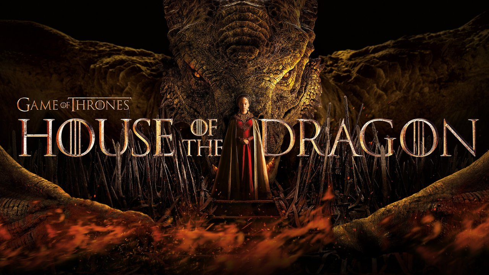
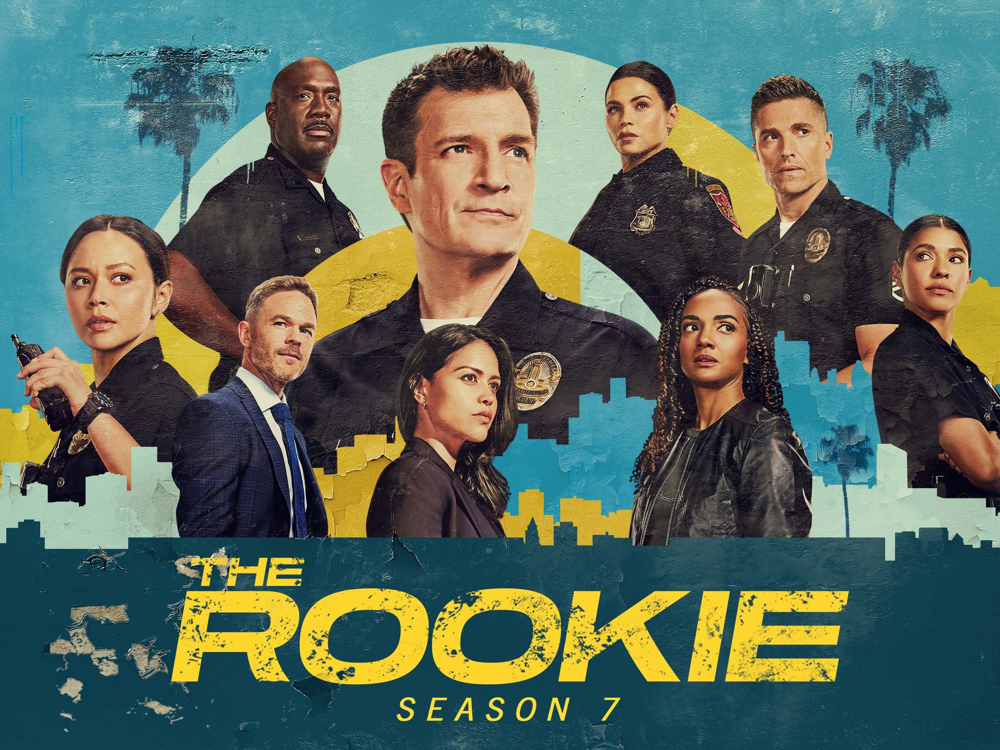
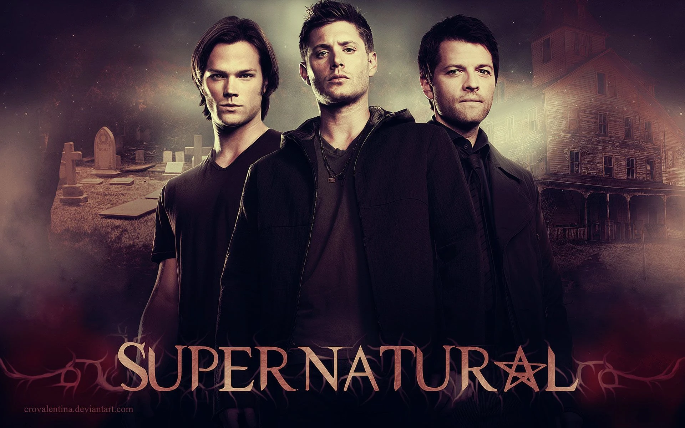

Star Wars: Episódio VII – O Despertar da Força
⚡ Ação / Aventura / Ficção Científica
⚡ Ação / Aventura / Ficção Científica

🦕 Aventura / Ficção Científica

🤣 Comédia / Ação / Aventura

🌊 Drama / Ficção Científica / Aventura

🐉 Drama / Fantasia / Ação

⚔️ Drama / Fantasia / Ação

🚔 Drama / Policial / Ação

👻 Fantasia / Terror / Drama